Travertine
Natural stone that stays cooler barefoot in July. The go-to around pools and on covered patios.
Pool decksPatiosWalkwaysStepping pads
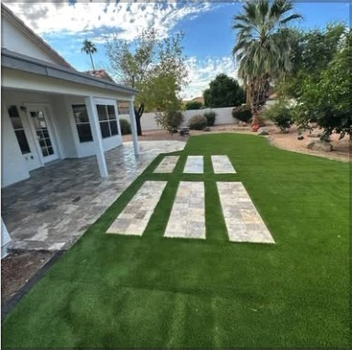
Mesa, AZ Hardscape & turf · Phoenix valley
Travertine, concrete, pavers and artificial turf, built by a crew that preps the ground right. Isaac comes out, measures, and gives you a straight price for free.
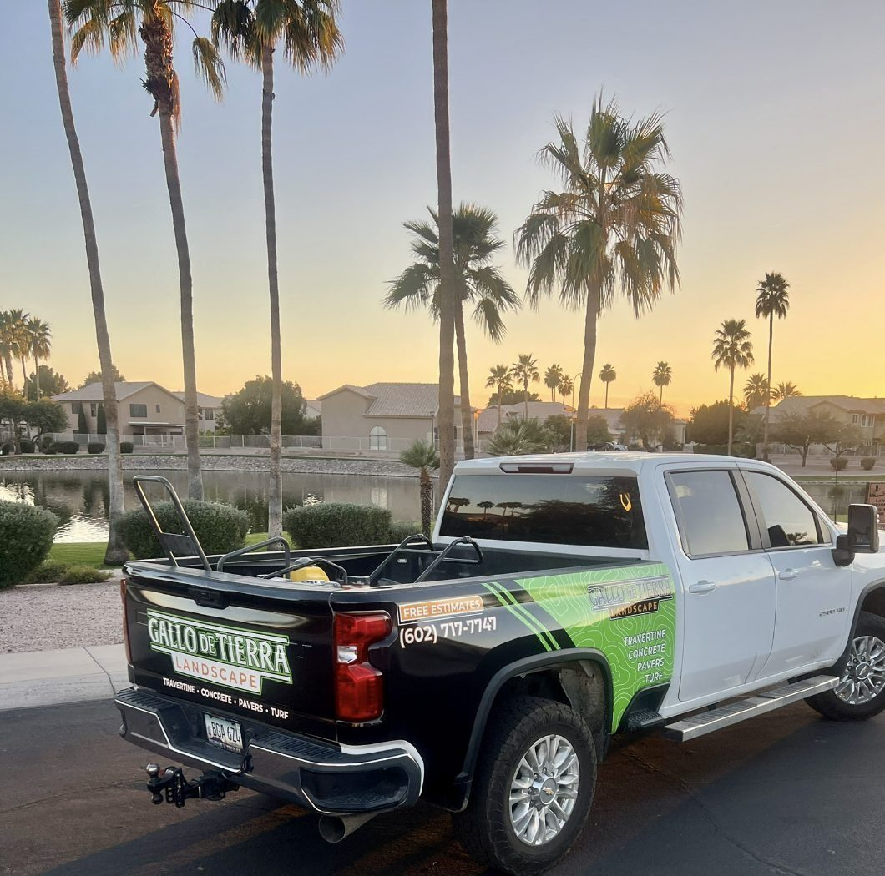
L-1 Materials
Four materials do most of the work in an Arizona yard. Here's where each one fits best. On the estimate we'll show you samples and talk through what makes sense for your space.
Natural stone that stays cooler barefoot in July. The go-to around pools and on covered patios.

Poured slabs and walks that take the heat, monsoon storms and the weight of a truck.
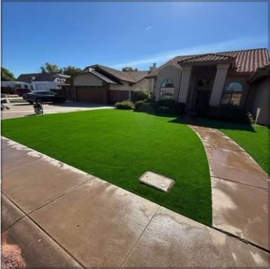
Interlocking pavers on a compacted base. They stay level, and a single paver can be lifted and fixed.
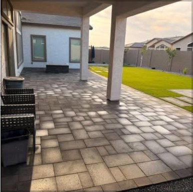
Artificial grass that stays green all year with no mowing, no brown spots and a smaller water bill.
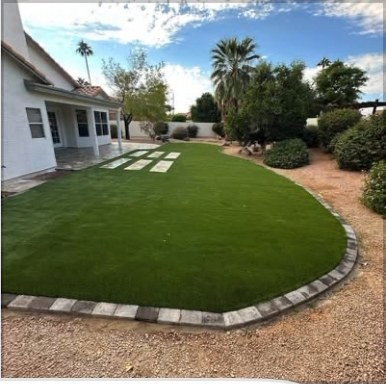
L-2 Before & after
Drag the green handle across the photo. Pick another job below to compare it.
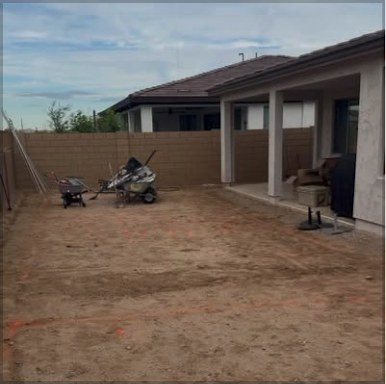
BeforeAfterL-3 How it works
Tell us what you want and send a couple of photos of the space if you have them.
Isaac measures on site, walks you through materials, and gives you a written price.
Grading, base, install and clean-up. Then we walk the finished yard with you.
L-4 Recent work
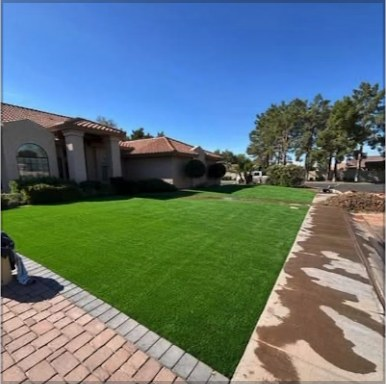
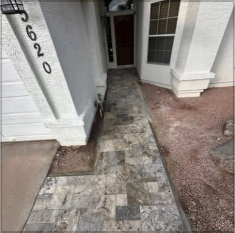
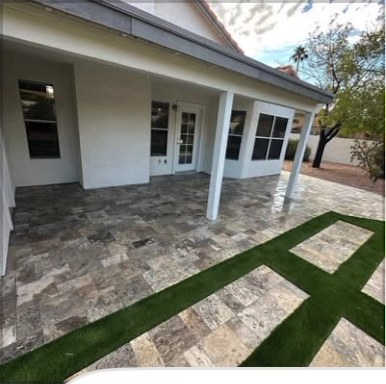
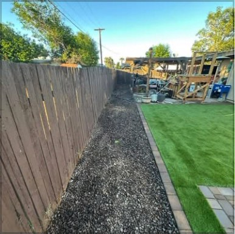
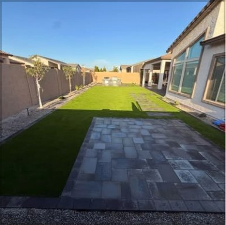
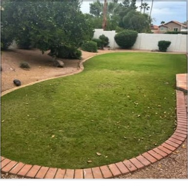
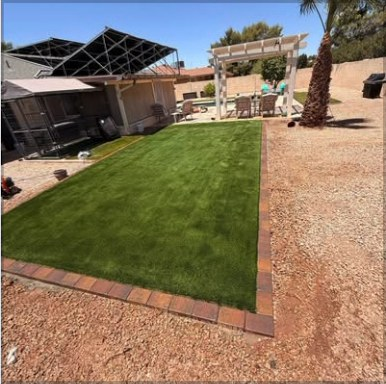
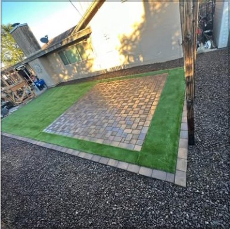
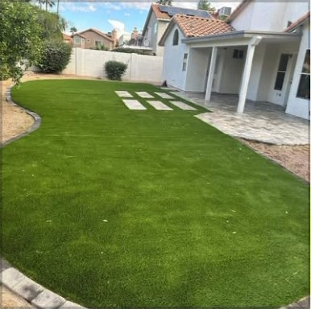
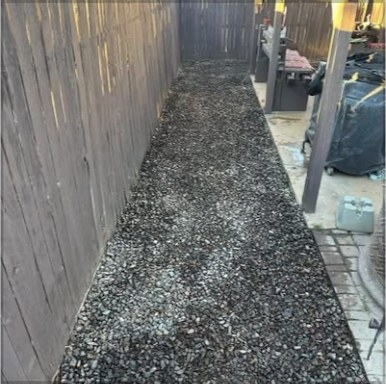
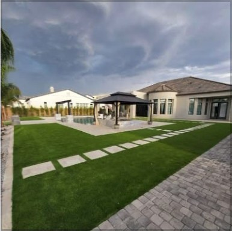
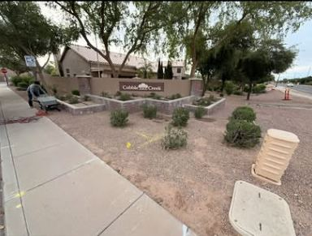
More jobs on Instagram: @gallo_de_tierralandscape
L-5 Service area
Don't see your city? Call anyway. If it's in the valley, we'll probably come out.
FAQ Common questions
Yes. We come out, measure, and give you a price. There's no charge and no pressure.
Travertine stays cooler underfoot and looks natural, so it's great by a pool. Pavers come in more colors and shapes and work well for driveways. We'll bring both up at the estimate.
Most patios, walkways and turf installs take a few days. Full backyard redos take longer. Your quote includes a timeline.
Yes. Removing old grass, rock or concrete, hauling it off and grading can all be part of the quote.
L-6 Free estimate
The fastest way to get on the schedule is a call or text. Or fill out the ticket and send it over.
(602) 717-7747